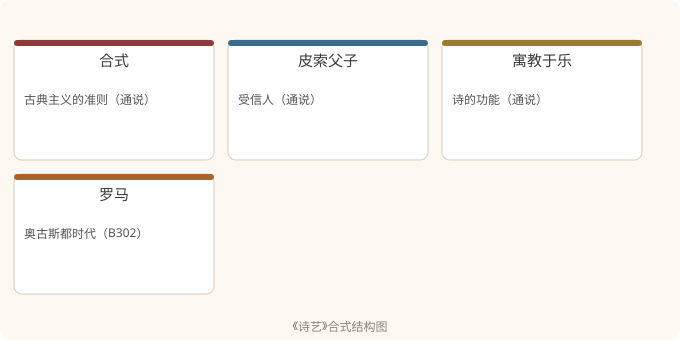

诗艺
一、基本信息
| 作者 | 贺拉斯 |
|---|---|
| 成书/出版 | 约公元前19-18年（Britannica B302：Ars Poetica——约19—18 BC） Horace — Encyclopaedia Britannica（百科全书） |
| 国别/地区 | 罗马 |
| 时代 | 古代 · 公元前1世纪 |
| 体裁 | 诗体信札（诗论） |
| 语言 | 拉丁语 |

《诗艺》合式结构图（主题·结构图）
二、创作背景
Britannica（B302）：Ars Poetica——'约19-18 BC'。
Britannica（B302）：贺拉斯——《颂歌》（Odes）作者、奥古斯都时代诗人。
题材（通说待核）：致皮索父子的诗学信札——'合式'（decorum）、寓教于乐。
三、内容脉络
（通说待核）诗的'合式'：题材与语言的匹配。
（通说待核）'寓教于乐'（omne tulit punctum...——不直接引文）。
四、主要人物表
| 人物 | 身份 | 说明 |
|---|---|---|
| 皮索父子 | 受信人 | （通说待核） |
五、主题与艺术特点
- '合式'原则（通说待核）。
- 诗人的修养与天才（通说待核）。
- 罗马古典主义的纲领（B302 语境）。
六、影响与评论
- Britannica：Ars Poetica（B302）。
Horace — Encyclopaedia Britannica（百科全书） - Britannica：贺拉斯《颂歌》的地位（B302 作者页）。
Horace — Encyclopaedia Britannica（百科全书）
七、阅读建议
难点
- 拉丁语诗体信札。
- 古典修辞学语境。
- 《诗艺》中译本（人民文学《缪灵珠译文集》等——通说待核）。
- 拉丁文原版（公有领域）。
西方诗论源头之一；与《诗学》对读。
八、待核实
- '寓教于乐'拉丁原文核对（不采译文为引文）。
- 收信人（皮索说）核对。
- 与《诗学》的传承关系待核。